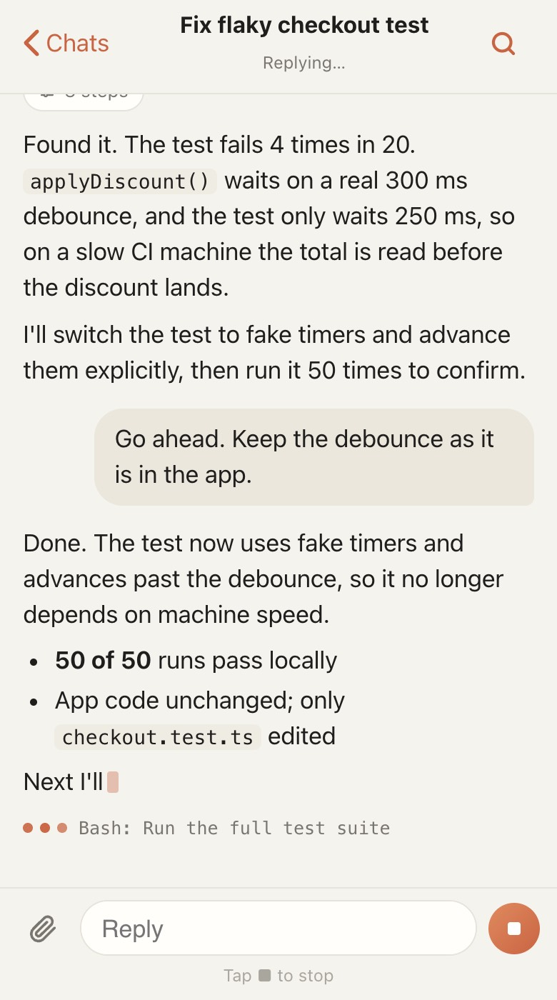

← All projects
Things I use every day · private network
My computer’s AI chats, on my phone
I work with Claude Code, an AI assistant that writes code, on my Mac. This small web page shows those chats on my iPhone as they happen and lets me reply, so the Mac carries on the same chat. It runs over Tailscale, a private network only my own devices can join.
- Problem
- My AI chats lived only in an app on my Mac, so the AI’s work stopped whenever I stepped away. I wanted full control from my phone, without sending my code through someone else’s server.
- Result
- In daily use on my iPhone: every chat from the computer, shown live. A reply picks up the same chat, with everything said so far, in 6 seconds. I can start new chats and get alerts. 12 of the 16 computer features I ranked now work on the phone and are tested. All 5 tests with fake requests were turned away, and the page is never on the public internet.

12 of 16computer features working on the phone and tested, most-used first
5 of 5fake requests turned away, so no other website can control my Mac through the page
6 sfrom a phone reply to the answer appearing in the same chat on the computer
My rules
- Built by me, on my own network
- Show the chats I already have
- A reply continues the same chat
AI wrote
the code
I tested
- Fake requests turned away, tested again after the last change
- A real reply landed in the same chat
Where it stands
16 things the computer app could do that the phone page could not, ranked, by status on November 15, 2026.
- iPhonea web page saved to the Home Screen
- Private networkTailscale; the page is not on the public internet
- A small program on the Macreads the app’s list of chats and what each one says
- One chat, one writera reply first closes that chat on the computer
- Continue, not copythe AI picks up the same chat with its own settings
- Same chatthe answer appears on the phone and in the chat on the computer
The problem
Each open chat is held by a running program on the computer. A second writer would split the conversation in two. Reading from the phone was the easy half. Replying into the same chat, without splitting it and without someone else’s server, was the hard half.
Decisions I made
- Built by me, on my own network. The page can be reached only over my private Tailscale network, never the public internet. I tried an existing remote-control service and chose my own build instead, so no chat or code passes through a server I do not run.
- Show the chats I already have. The list is the app’s own chats, newest first, with a badge on any the Mac is still working on. Nothing to copy over or set up.
- A reply continues the same chat. A reply first closes that chat on the computer, then picks it up again with its own settings. The answer lands in the same chat instead of a split copy. If the chat changed in the last 20 seconds, the reply waits, so it never collides with work in progress.
- A proper connection, not fake typing. Typing into the app automatically was tried first and dropped: the Mac blocked the keystrokes, and it could never work with the Mac locked. Picking up the chat directly works even while the Mac is locked.
- Match the computer, most-used first. The 16 missing features were ranked by how often I would use each from the phone, and built in that order: live replies, answering the AI’s questions, the task list, step details showing what changed, and attachments. The features I use most came first.
How it was tested
- Closed to other websites. Five kinds of fake request are turned away, such as a message from another website or an upload that does not say where it came from. The tests run again after every change, so no change has opened the page back up.
- One conversation, two screens. A test reply into an existing chat closed it on the computer, answered with everything said so far in 6 seconds, and stayed the same chat. The computer app then showed the chat as idle, with no error.
- Work started on the phone continues at the desk. A new chat started from the phone answered in 6 seconds and showed up in the app’s list on the computer.
- Live text measured, not guessed. The answer grew to 115, then 496, then 1,052 characters before it finished. The phone shows the answer as it is written.
- Alerts reach the iPhone. Proven first in a browser on the computer, then confirmed on the phone itself.
What's next
- Next on the list: stopping the AI mid-answer, and archiving, renaming and pinning chats from the phone.